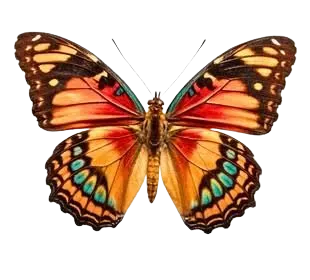

Animal Grimoire
 Butterflies
Butterflies
Symbolism & Medicine
Danaus plexippus - Monarch Butterfly
Butterfly's journey toward flight begins with an inward turn. Before she can earn her wings, she must examine everything she's been and digest it completely. This quiet, womb-like work requires total isolation from the world as she begins her self-deconstruction.
In her chrysalis sanctuary, Butterfly performs the ultimate sacrifice: she dissolves herself entirely into cellular soup. Only then, having surrendered all her past forms, can she consult her inner blueprint and begin pulling proteins together into wings. When Butterfly appears in your life, she signals a time to begin your own shedding, to digest your history, and prepare for transformation.
The Alchemy of Becoming
The caterpillar's metamorphosis isn't metaphor-it's biological magick. Before transforming, Caterpillar gorges on leaves in a frenzied pre-transition feast, stoking the energy she'll need. Once sated, she creates a protective shell and begins the messy work inside.
Within the chrysalis, she literally eats herself, breaking down every component until nothing remains but undifferentiated cellular material. This living soup contains all the raw materials needed to build her future body. From complete dissolution, she reassembles herself, growing structures she never possessed before, wings that will carry her into an entirely new way of being.
Navigating Your Own Metamorphosis
Butterfly's biological process illustrates the stages of deep transformation:
Nourish first - Reserves must be built before the dissolution phase begins
Release completely - Prior forms must be broken to their essential elements rather than preserved
Create sanctuary - The transitional stage requires protected time and space
Trust the blueprint - The pattern of what will emerge is already present within the raw material
This biological process mirrors the observable stages of significant change. Understanding Butterfly's medicine offers a framework for navigating transformation with greater clarity about its natural progression.
Soul and Spirit
Unlike the bee, which moves from flower to flower with great purpose and intention, the butterfly seems to flutter about almost aimlessly, with no great ambition behind its beauty. The Greek word for butterfly, psyche, is also the word for soul, and winged creatures are widely thought to be able to communicate with other worlds and with higher powers. One belief held that human souls incarnated into butterflies between lifetimes. The bond between spirit and butterfly appears across the world. The Celts believed the butterfly was a human soul in search of a mother, while the Aztecs believed that the last breath of a dying person took the form of a butterfly.
The butterfly's lifecycle is visible at every stage, from grub to caterpillar to pupa, and on to the chrysalis that opens to reveal the butterfly. This made it a symbol of transmutation and metamorphosis. Because of the period of gestation within the chrysalis, which resembles a tiny tomb, it is also an emblem of death and resurrection.
In Japan the butterfly is the archetypal symbol of femininity and vanity, though two butterflies together stand for love and marriage.
⚠️ The following belief belongs to the Blackfoot, a Native American people. It is part of a closed practice that is sacred to that tradition and should be practiced only by those within the originating culture.
Some Native American peoples, particularly the Blackfoot, believe the butterfly brings dreams. They use a stylized butterfly symbol, resembling a Maltese Cross, embroidered onto babies' cribs and clothing so that the children sleep well and have sweet dreams. When a butterfly is painted on the wall of a tribal lodge, it signals that any other patterns drawn there were not the work of a person alone but were inspired by the Great Spirit, for whom the painter acted only as a conduit.